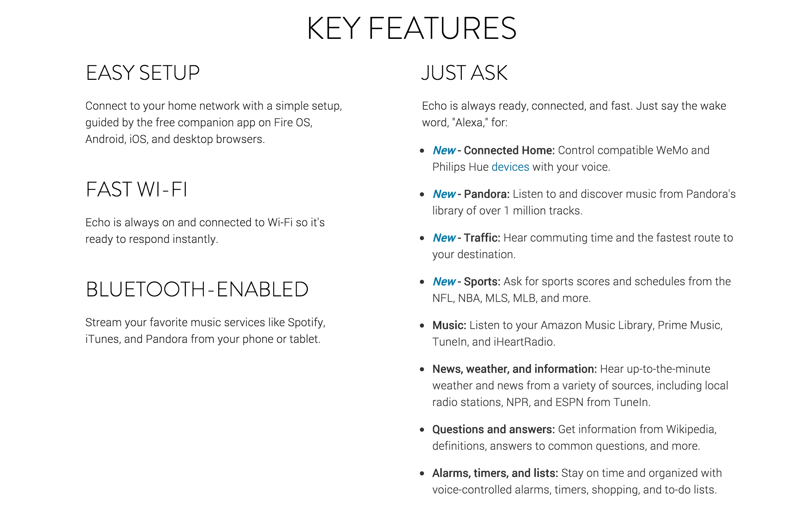
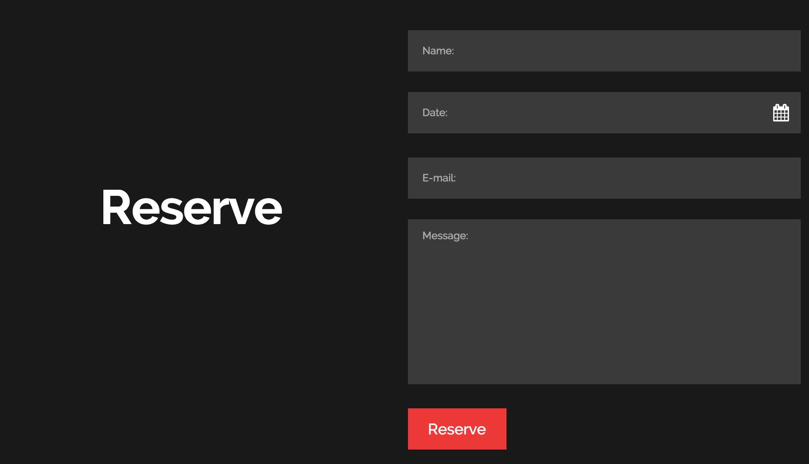

Header
http://run4tiger.com/
I'm a big fan of simple flat headers that don't distract from the main content, but also don't make the user squint. run4tiger did a great job with this. The bold white text contrasts greatly with the pitch black background and the yellow-ish orange is a very nice touch of personalization. This couples very well with WWF's black and white logo. This website was meant to inform users of a charity run event, and allowed the nav's content to be very minimal. The webpage itself doesn't have much scrolling, so the navigation in header functions as the only way to traverse the site. This header can be used on sites that showcase information and want a user to take action. Such as a charity event with a prompt for users to participate and donate, or a portfolio where one would want a user to contact and hire them.
Call to Action
https://www.godaddy.com/
A call to action is meant for a user to want to click on it, and GoDaddy's CTA is very clean and delightful. The CTA draws in the user's attention with the pop of GoDaddy's signature green. The white text is easy to read against the dark grey background and the GET STARTED button standss out with it's sharp outline. It also has a picture of a smiling woman (who is credited as a GoDaddy customer) to enhance the feeling that one would be satisfied if they used this service. This CTA can be used for a wide variety of websites that offer services. It has a very standard arrangement and one wouldn't have much to change in terms of set-up.
Features

http://www.amazon.com/oc/echo/
I thought it was very interesting that Amazon didn't include any sort of icon in their features section for their Echo. I assume that they wanted to show off more of what a user could say to "Alexa" in order to show what it can do. The page has a very modern and simple styling with its dark thin text over a basic white background. Although it's a bunch of text, it's spaced out well enough that it doesn't become a tiring read. The blue that is added for the new features matches the blue theme for Amazon Echo. This would best be used for websites that will showcase a piece of technology that would need a longer list of what the product is capable of.
About
http://www.natashanegovanlis.com/about.HTML
Natasha's about page is her short history, and being coupled with a large picture makes it look like a rather intimidating wall of text. They didn't make it too hard to read as it is a very simple black text on a white background, but I would complain that it's a bit too small. The page has a very classic look to it; being very plain and settling for a serif font rather than a sans-serif. The picture is a nice touch and adds a more artistic personality to the page. Had it not been there, I can imagine it to look rather boring. This section is very literally for those that would want to know more about the company or person that the site belongs to. Therefore the content on this page will come out more often than not to be a chunk of text. One should be sure to stucture it in a way that wouldn't be too hard to read.
Blog

http://kotaku.com/
Kotaku's articles can go three ways: either be serious and have some actual news, it will show us something really cool, or it'll be completely random and not meant to be taken seriously at all. With these articles, if it isn't the title that catches your interest it's the preview image. This image can range from a very serious and dark picture, to a very bizarre gif. I find that the very generous white-space and plain white background is a great touch to allow for a wide variety of dynamic preview images. The fairly large title also helps catch our eye as we scroll through the site. As mentioned before, Kotaku does a very good job of letting the title and image do their job of giving us the gist of what the article is about. A bit of the first paragraph of the article is also included. This gives users an easy way of sifting through material that they may or may not be interested in. Sites where people are meant to view content should adapt this as users should be allowed to pick what content they want to read, watch, and look at.
Contact
http://ghostgames.com/contact
A contact page is meant to provide clear information for users to contact a site through. Therefore, the information should be easy to read and easy to find. Ghost Games does a great job with this as the large white and red text stands out very well against the dark grey background. These colors were chosen to match the brand's theme of grayscale and red. Their contact page shows their various locations as well as a phone number or email corresponding to each location. Links to their social media is also provded. This format could apply to restaurants, retail, and other companies that have many branches and locations.
Contact Form

http://www.templatemonster.com/demo/53944.html
The next best thing to a clear contact page is a simple, and easy to fill-out contact form. The input fields are very large, and although it follows a dark greyscale theme the fields still stand out against the dark background. The large white "Reserve" draws the eye and helps the user know what this form is and what they're filling it out for. The red button tops it off by adding a bit of personality to an otherwise mute page, as well as familiarize the user with where to click when they're done filling out the form.
Login/Registration
https://virb.com/login
http://virb.com/signup
Nobody likes filling out a form. One should make sure to make a form that is easy to read, navigate, and fill out. Virb's text fields are very large, and they are very clear about the information that should be entered into them. There is also an optimal amount of whitespace to keep the form from feeling crowded. Virb's form style is very clean and simple as it is very greyscale and only uses their signature green to make their button stand out.
Store
http://www.shopgearbox.com/
Users should be able to browse through a store page with ease. They should see the product first, and if they're interested they should be able to find the price right away. Gearbox's store couldn't be any easier. The preview image of the product is what's most prominent; what follows is the name of the product and in BIG BOLD NUMBERS comes the price. This makes it very easy to users to scan for what they want, know how much it is, and they can click on the bright yellow button for more details. Gearbox also gives users an extra hand in their shopping by dimming out items that are out of stock.
Footer
https://www.google.com/
A footer is used to provide a user with miscellaneous information, and it's best to keep it very clean and simple. Google does a great job with this as their footer is very small and has a mute color scheme. It's prescence on the page doesn't distract the user from the main content.